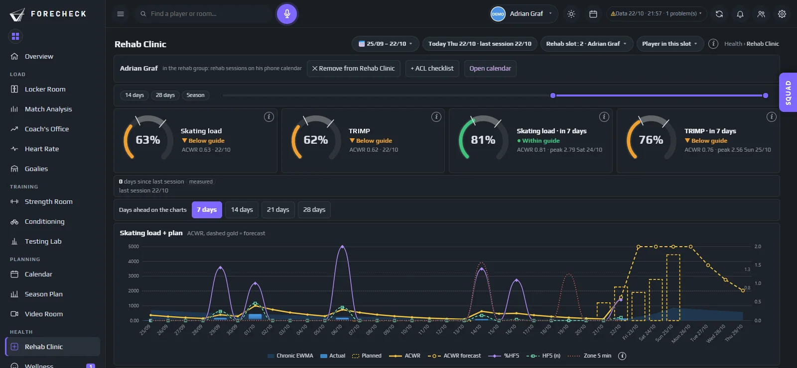

Rehab Clinic
Retour sur la glace, sur des faits.

Une seule vue
Le physio, le préparateur physique et l’entraîneur principal lisent la même page
iEn savoir plus
L’étape, les séances et la progression de chaque joueur en réhab, avec des mots que tout le staff comprend. Les détails médicaux restent réservés à ceux qui en ont besoin.
En réhab
- #5 D4/5Glace, sans contact · feu vert jeudi
- #19 F2/5Mobilité · salle uniquement
De retour sur la glace
La charge reconstruite par rapport au niveau du joueur lui-même
iEn savoir plus
Les données Catapult des séances de patinage en réhab sont comparées à la charge du joueur avant sa blessure : le retour au jeu repose sur des chiffres, pas sur une impression.
Séances de réhab cette semaine
- LunSalle · force bas du corps
- MarGlace · 35 min, sans contact
- JeuGlace · test physio pour le contact
Dans le calendrier
Les séances de réhab là où le joueur les voit
iEn savoir plus
Les séances de réhab s’ajoutent au calendrier personnel du joueur, à côté du programme de l’équipe, sans exposer de détails de santé au reste du groupe.
Aujourd’hui
- Entraînement sur glace
- Vélo de récupération · 20 min
- Match à l’extérieur · car 15h00
Abonné · se met à jour tout seul
Les questions auxquelles il répond
Ce que vous décidez avec
- Quand le joueur sera-t-il prêt, et pour quoi ?
- La charge de réhab est-elle proche du niveau habituel du joueur ?
- Qui valide l’étape suivante ?
- Tout le staff a-t-il les mêmes informations ?